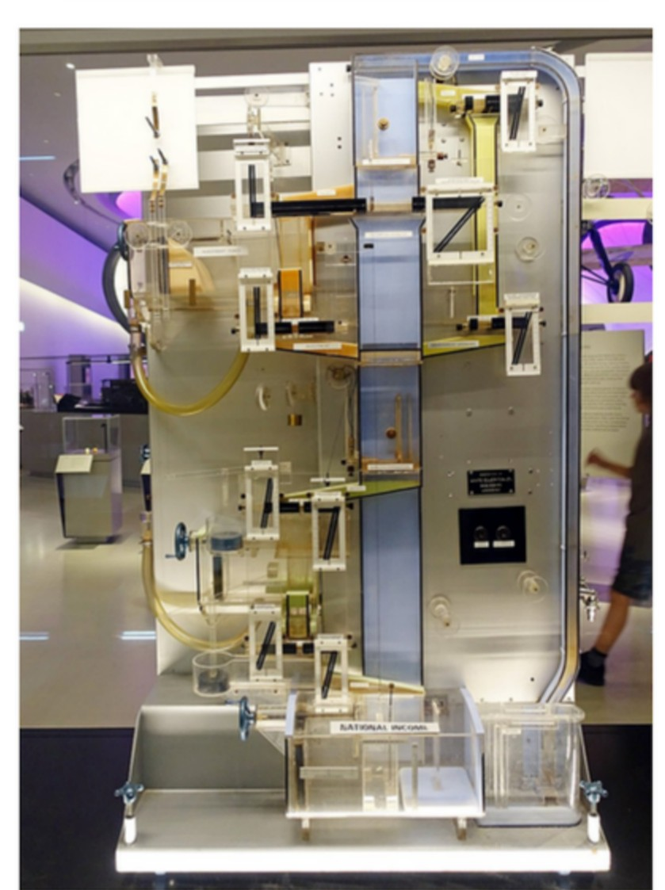

The problem
A former teacher at my school had built a Phillips Machine, also known as a MONIAC: a hydraulic computer that simulates an economy by pumping coloured water between tanks. Income flows, some is drained off as tax, some leaks away into savings and imports, and what is left circulates back round. It is an unusually good teaching device, because the Keynesian principles it demonstrates stop being algebra on a whiteboard and become something a class can watch fill up and drain away in real time.
It was also a machine full of water. Ours became prone to leaking and, despite how well it taught, it was disposed of.

What I built
The Digital Phillips Machine reproduces what the original did, showing how changes to the effective tax rate, government spending and exports feed through to Gross Domestic Product, but as a program instead of a plumbing system. Being software, it needs no maintenance, cannot leak, and can be put in front of a class on any computer in the building, which is ultimately the whole point: the teaching value of the original was never in the water.

How it works
Policy levers sit at the bottom-left and the state of the economy is drawn on the right. Adjusting a lever changes the flows and the levels in the tanks, so a policy change is something you watch propagate rather than something you calculate.
- The levers are the effective tax rate, the proportion of disposable income consumed, the proportion of savings that is invested, the proportion of consumption that is imported, plus direct figures for government spending and total export value.
- The stocks and flows it tracks are the government balance, savings, foreign currency balances and GDP itself, with the animated flows between them showing which direction money is currently moving and how fast.
- The graph plots GDP over time.
That graph is the part that earns the tool its place in a classroom. Raise the tax rate and GDP does not simply step down to a new number: it moves, overshoots and settles. Watching the curve wander and then converge on a new equilibrium teaches the dynamics of the multiplier far better than the equilibrium value on its own ever does.